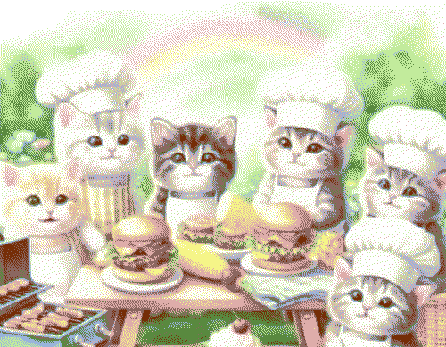

about
Desteny (b. 2000) is passionate in web design and development. He has a love for colorful, silly things, and cats. Really enjoys making hand crafted websites.
web projects
- 2023-forever My home on the internet @ doqmeat.com
- 2024-ongoing A fansite dedicated to my favorite vocaloid producer, siinamota.
education
2024-2028 BS Computer Science, University of Puerto Rico
publications
2024 Maren Bell, Hello, World (Wide Web)!